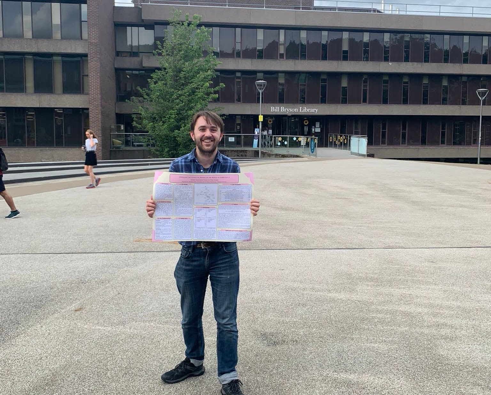

PhD (2022-)

I am currently undertaking a PhD at the University of Birmingham, supervised by Samuel Johnson and Enrico Amico, and formerly supervised by Wessel Woldman. My PhD focuses on the mathematical modelling of epilepsy using network-based metrics derived from EEG. My PhD has involved the following projects:
Treatment Effects in Epilepsy: A Mathematical Framework For Understanding Response Over Time
Aim: Assessing the robustness of networks to parameter changes in an associated dynamic network model -
modelling a dynamic response ("honeymoon effect") to epilepsy treatment.
Collaborators: Gwen Harrington, Wessel Woldman, Leandro Junges, John Terry
Keywords: epilepsy, brain network model, honeymoon effect, brain network ictogenicity,
brain surgery, anti-seizure medication, network physiology
Status: Read our published paper
here.
Resting-State EEG Network Markers Differentiate People with Epilepsy and Functional Seizures
A collaboration with researchers at Kings College London.
Aim: Evaluating the performance of machine learning models in differentiating network-based
markers derived from resting-state EEG in people with epilepsy and functional/dissociative seizures (FDS).
Collaborators: Irene Faiman, Paul Shotbolt, Rachel Sparks, Joel Winston, Allan Young (KCL),
Franz Brunnhuber, Naima Ciulini (NHS), Wessel Woldman
Keywords: epilepsy, FDS, machine learning, differential diagnosis, network-based markers, EEG,
brain network models
Status: Read our preprint
here.
Trophic Incoherence, Non-Normality, and Pseudospectra in Brain Network Models of Epilepsy
Aim: Using mathematical models to explore the effect of trophic structure, non-normality, cycles
and perturbations in network structure on the emergence of epileptic seizures in the brain.
Collaborators: Catherine Drysdale (Lancaster)
Keywords: epilepsy, brain network model, trophic incoherence, non-normal networks, pseudospectra
Status: Read our preprint here.
Understanding the Prognosis of Epilepsy from Longitudinal EEG Data
A collaboration with researchers at the University of Melbourne.
Aim: To explore the long-term changes in epileptiform activity in relation to network-based
measures and anti-seizure medications.
Collaborators: Anita Dharan, Wendyl D'Souza (Melbourne), Wessel Woldman
Keywords: epilepsy, prognosis, network-based markers, EEG, ambulatory EEG, longitudinal data,
anti-seizure medication, brain network models
Status: Ongoing.
ATMOSPHERE project
I am affiliated with the
ATMOSPHERE project, led from the University of Bristol, as part of the data science team, with which I formerly held a position as a research associate.
This project aims to develop
a machine learning algorithm which can forecast epileptic seizures
using physiological data from smart watches.
Links:
ATMOSPHERE at LEAP digital health hub
ATMOSPHERE at N-CODE
Feasibility study protocol paper (2026)
Co-design and usability study protocol paper (2024)
MMath Dissertation (2021-22)

My masters dissertation project, "Modelling the effect of testing on the spread of SARS-CoV-2" used SEIRS-type epidemiological models and aggregated data from Durham University's student lateral flow testing programme to model the potential effect of low-sensitivity, high-specificity testing and isolating on the spread of Coronavirus.